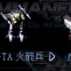

以飛彈為基本武器的單位，適合對空。視野較廣，升級速度偏快，有一定裝甲。擁有 I.C.B.M（核武）可在戰爭中造成翻盤效果。
| 名稱 | 技術等級 | 說明 |
|---|---|---|
| I.C.B.M | 72 | 強力核飛彈（回放確認傷害約 1500） |
| UCD 安瓿 | - | 治療人類單位 |
| MCD 安瓿 | - | 治療機械單位 |
| 懸浮 | - | 不留腳印 |
| 隱形 | - | 隱形 |
| 名稱 | 技術等級 | 攻擊力 | 射程 | 射速 | 攻擊模式 |
|---|---|---|---|---|---|
| GT Rocket Launcher | 1 | 30 | 16.9m | 0.7s | 僅對空 |
| Polaris | 15 | 36 | 18.3m | 0.7s | 僅對空 |
| Polaris V | 104 | 101 | 31.9m | 0.6s | 僅對空 |
| Duki Rocket Launcher | 132 | 125 | 32.0m | 0.6s | 僅對空 |
資料來源：Ever☆Zone Tistory /108